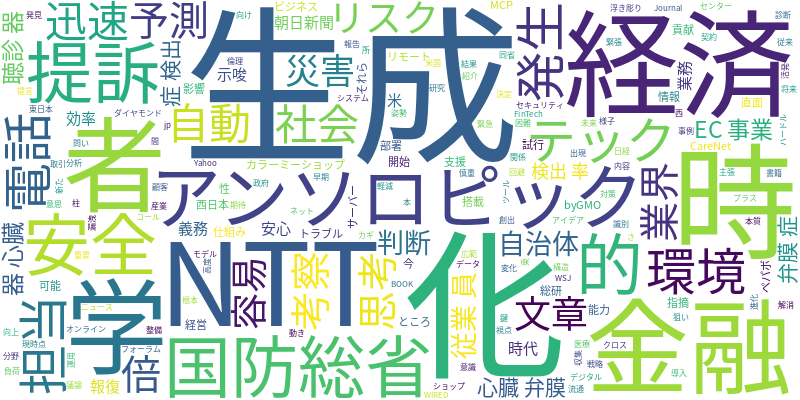

☁️ 今日のトレンドワード

📰 今日のピックアップニュース (10件)
AI企業アンソロピック、国防総省を提訴
AI開発企業アンソロピックが、AIの安全利用を巡る国防総省との契約解消が「報復」にあたると主張し、同省を提訴しました。AIの倫理的かつ安全な利用に向けた、企業と政府間の緊張関係が浮き彫りになっています。
米テック企業、従業員にAI利用を義務化
米国のテック企業において、従業員にAIツールの利用を義務付ける動きが広がっています。業務効率化や新しいアイデア創出を狙ったもので、AI活用が企業戦略の重要な柱となっていることが示唆されます。
EC事業者向けAI活用環境を整備
「カラーミーショップ byGMOペパボ」が、EC事業者が安心してAIを活用できる環境として「リモートMCPサーバー」を提供開始しました。セキュリティや運用負荷の軽減を図り、AI導入のハードルを下げる狙いがあります。
NTT西、電話対応を生成AIで自動化
NTT西日本は、トラブル発生時の電話対応を生成AI技術で自動化する仕組みの試行を開始しました。顧客対応の効率化と迅速化を目指しており、コールセンター業務におけるAI活用の可能性を示しています。
AIが経済・社会を変える未来予測
AIが経済や社会に与える影響について、経済学・経営学の視点から予測する書籍が紹介されています。AIによる産業構造の変化や、新たなビジネスモデルの出現など、AIの広範な影響を考察する内容です。
AI聴診器、心臓弁膜症検出率が2倍に
AIを搭載した聴診器が、心臓弁膜症の検出率を従来の2倍に向上させたという研究結果が報告されました。医療分野におけるAIの診断支援能力の高さと、早期発見への貢献が期待されます。
AIは「思考」しているのか？考察深まる
AIが「思考」しているのかという根本的な問いに対し、引き続き考察が深められています。AIの高度化に伴い、その能力や意識の本質を巡る議論が活発化している様子が伺えます。
金融業界、生成AIの6大リスクと対策
日本総研が、金融業界が直面する生成AIの6つのリスクを指摘し、それらを回避するための3つの鍵を提言しました。データ漏洩や誤情報など、金融取引におけるAI活用の慎重な姿勢が求められています。
AI生成文章、見分けるのは「今のところ」容易
AIによって生成される文章が広く流通していますが、現時点ではそれらを見分けることは比較的容易であると報じられています。しかし、AIの進化により、将来的には識別が困難になる可能性も示唆されています。
災害時、生成AIが自治体の判断を迅速化
NTT東日本が、災害発生時に自治体の担当部署が迅速な判断を下せるよう、生成AIを活用したシステムを開発しました。緊急時の情報収集・分析・意思決定支援にAIが貢献する事例です。
本日のAI・テック業界は、AIの社会実装が加速する一方で、その倫理的・技術的な課題も浮き彫りになっています。アンソロピックによる国防総省提訴は、AIの安全利用を巡る企業と政府の緊張関係を示唆。一方、米テック企業では従業員へのAI利用義務化が進み、業務効率化への期待の高まりが見られます。EC事業者向けには、安心・安全なAI活用環境の提供も始まっています。医療分野では、AI搭載聴診器が診断精度を大幅に向上させるなど、具体的な成果も現れています。また、NTT西日本やNTT東日本は、電話対応自動化や災害時の判断支援に生成AIを応用。金融業界では、AIリスクへの対策が急務となっています。AI生成文章の識別は現状可能ですが、今後は難しくなる可能性も。AIが「思考」しているのかという根源的な問いも、引き続き議論されています。AIは経済・社会構造を大きく変える可能性を秘めており、その活用とリスク管理の両面からのアプローチが重要となっています。